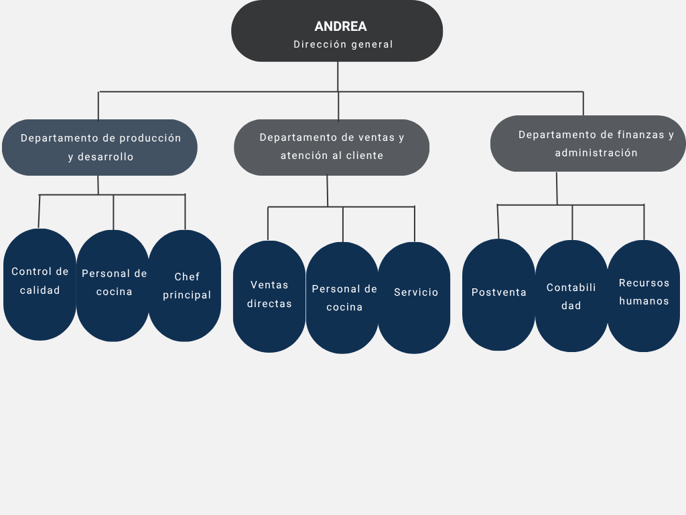
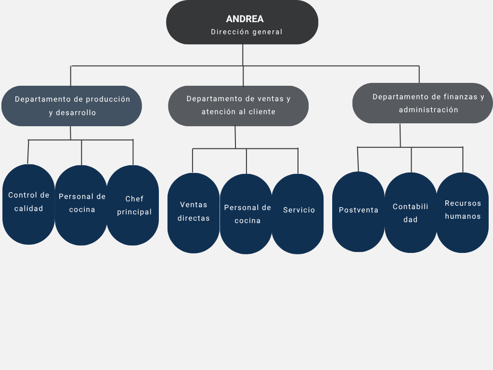

Historia
The Cookie Doc’s Shop nació de una necesidad observada por su fundadora: la dificultad de encontrar galletas accesibles y de calidad para personas con necesidades alimenticias especiales. Al consumir productos sin azúcar o sin gluten, notó que eran costosos y muchas veces no cumplían con el sabor o la calidad esperada.
Con esa inquietud, decidió crear una empresa que ofreciera galletas saludables, sabrosas y accesibles para todos, sin importar sus restricciones alimenticias. Así surgió The Cookie Doc’s Shop, con una misión clara: elaborar galletas con ingredientes seleccionados cuidadosamente, sin dejar de lado el sabor, la seguridad alimentaria ni el precio justo.
El objetivo de la empresa es llegar a un público amplio, incluyendo a quienes requieren dietas especiales, con una variedad de productos: tradicionales, sin azúcar y sin gluten. Todo esto siguiendo su visión de ser una empresa confiable, con precios accesibles y productos de calidad para todos los sectores de la población.
Con el tiempo, la empresa espera crecer y seguir innovando, manteniéndose fiel a sus valores: inclusión, calidad, responsabilidad y accesibilidad.
 
